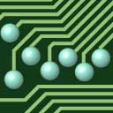

The Virtual Motherboard Homepage

The Virtual Motherboard is hosted under sourceforge
(see:
http://sourceforge.net/projects/vmb/). There you can get
source code and browse the CVS repository.
Here you find documents, specifications for individual devices
and links to ready to run binary examples.
Device Documentation
- mother - the motherboard herself
- winvram - Framebuffer Device with Mouse and GPU
- timer - Timer Device to generate interrupts and get the current time and date.
- led - LEDs to turn on and off
- button - push button sending interrupts to the system
- sevensegment - a sevensegment display for numbers
- screen - serial output device to display characters
- keyboard - serial input device to read characters from the keyboard or from a File
- disk - hard disk controler to read and write blocks in a disk (image).
- RAM - from 1 Byte to 4 GByte RAM
- ROM - Read only memory defined by an image file
- FLASH - Read/Write memory made persistent through an image file
- mmix - the MMIX CPU
General Documentation
Installation
- Windows
Currently, the simplest way to install the VMB devices is available for Windows users.
Download the setup.exe file, double click it, and you are done.
If all goes well, it will start a simple configuration: from the file readme.vmb: a screen, a keyboard, a MMIX CPU, a ROM, and a ROM image. The keyboard will initialy take input from the file readme.txt. The CPU will take instructions from ROM, and these will take input from the keyboard and send it to the screen. So you should see the readme file.
- Linux
Linux users have to compile the devices from sources obtained from cvs (see:
http://sourceforge.net/projects/vmb/). The sources come with Makefiles. If you have make and gcc, just execute make in the top source directory.
Examples and Binaries
To avoid duplication of efforts, examples and binaries have moved to the MMIX Homepage.